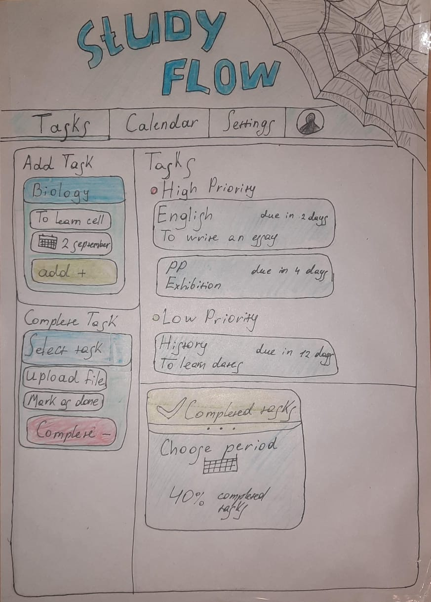

A productivity platform designed to help students study smarter.
Product: StudyFlow is a simple web platform that helps students organize study sessions and stay focused.
Problem: Many students struggle with time management and organizing their study tasks.
Importance: Poor study organization leads to stress and lower academic performance.
Unique Idea: StudyFlow combines task planning and focus sessions in one simple interface.
Example of the interface design for StudyFlow:

Name: Aluadin Damir
School: BIL (Bilim Innovation Lyceum)
Program: IB MYP Year 5
Student interested in technology, programming and digital product development. This project focuses on creating a simple productivity tool that helps students manage their study tasks more efficiently.